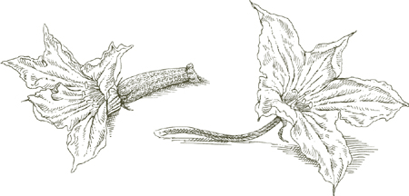

Вы можете приготовить блюдо к этому моменту за несколько часов до того, как собираетесь его подавать. Не охлаждайте.
Вы можете приготовить блюдо к этому моменту за несколько часов до того, как собираетесь его подавать. Не охлаждайте.На 6 и более порций, если подается в качестве закуски.
8-10 свежих кабачков
1 столовая ложка сливочного масла
1 столовая ложка растительного масла
1 столовая ложка лука, мелко нарезанного
¼ фунта вареной некопченой ветчины, мелко нарезанной
Соль
Черный перец, свежемолотый с мельницы
Соус бешамель, приготовленный как указано, используя 1 стакан молока, 2 столовые ложки сливочного масла, 1½ столовой ложки муки и ⅛ чайной ложки соли.
¼ стакана свеженатертого пармиджано-реджано сыр
Целый мускатный орех
1 яйцо
Форма для запекания в духовке на столе
Сливочное масло для смазывания и усеивания формы для запекания
Панировочные сухари без вкуса, слегка поджаренные
1. Замочите и очистите кабачки. как указано, но не обрезайте концы.
2. Доведите до кипения 3–4 литра воды, положите кабачки и варите, пока они не станут мягкими, но пока они не станут твердыми, если их протыкать вилкой. Слейте воду, и как только они остынут настолько, что вы сможете их взять с собой, отрежьте оба конца, разрежьте каждый кабачок на 2 более коротких части, затем разрежьте каждый кусок. в длину пополам. Чайной ложкой аккуратно вынимаем мякоть кабачков, стараясь не сломать. кожа. Половину вырезанной мякоти выбросьте, а вторую половину крупно нарежьте. Отложите нарезанную мякоть и выдолбленные кабачки в сторону.
3. Разогрейте духовку до 400°.
4. Положите сливочное масло, масло и лук в сковороду, включите средний огонь и обжарьте лук, пока он не станет прозрачным. Добавьте нарезанную ветчину и готовьте около 1 минуты, помешивая один или два раза. Добавьте нарезанную мякоть цуккини, переворачивая, чтобы она хорошо покрылась, и увеличьте огонь. Готовьте, время от времени помешивая, пока кабачки не станут насыщенно-золотистого цвета и не приобретут кремовую консистенцию. Добавьте соль и перец, быстро перемешайте один или два раза, затем переложите содержимое сковороды в небольшую миску с помощью шумовки или лопаточки.
5. Приготовьте бешамель и готовьте его достаточно долго, чтобы он стал достаточно густым. Вылейте бешамель в миску с обжаренной мякотью кабачков, перемешайте, затем добавьте тертый пармезан, небольшую терку мускатного ореха (около ⅛ чайной ложки) и яйцо и быстро перемешайте, пока не получите однородную смесь всех ингредиентов.
6. Смажьте дно формы для запекания сливочным маслом. Выложите выдолбленные кабачки в форму кожицей вниз. Наполните каждый смесью бешамеля и мякоти цуккини, посыпьте панировочными сухарями и смажьте сливочным маслом.
7. Поставьте форму на самую верхнюю полку разогретой духовки и запекайте 15–20 минут, пока сверху не образуется легкая золотистая корочка. Достав блюдо из духовки, дайте ему отстояться 5–10 минут, прежде чем подавать на стол.
Предварительное примечание Вы можете приготовить блюдо к этому моменту за несколько часов до того, как собираетесь его подавать. Не охлаждайте.

На 6 порций
10 свежих кабачков диаметром от 1,4 до 1,5 дюймов.
3 стакана лука, нарезанного тонкими ломтиками
3 столовые ложки растительного масла
2 столовые ложки измельченной петрушки
2 столовые ложки томатной пасты, разбавленные 1 стаканом теплой воды
3 столовые ложки молока или больше
⅔ нарезать хороший, твердый белый хлеб, срезать корку
½ фунта говяжьего фарша, желательно окорока
1 яйцо
3 столовые ложки свеженатёртого пармиджано-реджано сыр
1 столовая ложка нарезанной прошутто ИЛИ ветчина вареная некопченая
Соль
Черный перец, свежемолотый с мельницы
1. Замочите и очистите кабачки. как указано, отрежьте оба конца и разрежьте каждый кабачок на 2 более короткие части. Используя овощечистку, лезвие овощечистки или любой достаточно узкий острый инструмент, вырежьте кусочки кабачков, стараясь не проколоть боковые стороны. Оставьте истонченную стенку кабачка толщиной не менее ¼ дюйма. Вынутая мякоть в этом рецепте не нужна, но вы можете использовать ее в приготовлении. ризотто или фриттата.
2. Выберите сотейник, в котором впоследствии можно будет разместить все кусочки кабачков плотно, но без перекрытия. Добавьте лук и масло, включите средний огонь и готовьте, помешивая, пока лук не завянет и не станет мягким. Добавьте петрушку, перемешайте 2–3 раза, затем добавьте разведенную томатную пасту, тщательно перемешав с луком, и продолжайте готовить еще 15 минут.
3. Одновременно в небольшую кастрюльку влейте молоко, подогрейте его, не доводя до кипения, разомните в него хлеб и отставьте остывать.
4. Положите в миску говяжий фарш, яйцо, тертый пармезан, нарезанную прошутто или ветчину, хлебно-молочную кашу, соль и перец и месите руками до получения однородной смеси.
5. Начините получившейся смесью выдолбленные кабачки, плотно уложив их, но стараясь не повредить хрупкие стенки овоща. Выложите фаршированные кабачки в сковороду с луком и помидорами, накройте крышкой и готовьте на среднем огне, пока кабачки не станут мягкими, около 40 минут, в зависимости от их молодости и свежести. Во время приготовления время от времени переворачивайте их.
6. Когда сок будет готов, если сок в кастрюле водянистый, снимите крышку и увеличьте огонь. до высокой температуры и варите их. Попробуйте и поправьте на соль. Переверните кабачки один или два раза, переложите содержимое кастрюли на сервировочное блюдо и дайте настояться несколько минут, прежде чем подавать на стол.
Предварительное примечание Вот одно из тех блюд, которое не имеет никакой пользы, если его подадут сразу же, как только оно будет готово. Его вкус улучшается, если его подать через несколько часов или даже день. Осторожно разогрейте его в закрытой кастрюле и подавайте теплым, но не горячим.

Цветение женских и мужских кабачков
TОН СИЛЬНЫЙ оранжево-желтые цветы кабачков очень скоропортящиеся, поэтому вы, скорее всего, найдете их только на тех рынках, где продаются местные сезонные продукты. Цветки бывают как мужские, так и женские, и только мужские, находящиеся на стебле, годны в пищу. Женские цветки, прикрепленные к кабачкам, мягкие и неприятные на вкус.
На 4-6 порций
1. Быстро промойте цветы под холодной проточной водой, не позволяя им замачиваться. Аккуратно, но тщательно промокните их мягкой тканью или бумажными полотенцами. Если стебли очень длинные, обрежьте их до 1 дюйма. Сделайте надрез на одной стороне основания каждого цветка, чтобы цветок раскрылся, как бабочка.
2. Налейте в сковороду достаточно масла, чтобы оно поднималось по бокам на ¾ дюйма, и переверните. на жаре до максимума. Когда масло очень горячее, используйте стебли цветов, чтобы быстро окунуть их в тесто и вытащить из него, а затем положить на сковороду. Вставляйте ровно столько, сколько будет сидеть очень свободно. Когда на одной стороне у них образуется золотисто-коричневая корочка, переверните их и сделайте другую сторону. Переложите на решетку для охлаждения или на блюдо, застеленное бумажными полотенцами, используя шумовку или лопаточку. Если еще осталось цветение, повторите процедуру. Когда все будет готово, посыпьте солью и сразу подавайте.
На 6 порций
4 средних круглых, восковых, отварных картофеля
3 сладких перца, желательно желтого
3 свежие, твердые, спелые, круглые ИЛИ 6 сливовых помидоров
4 средних желтых луковицы
Неглубокая форма для запекания
¼ стакана оливкового масла первого отжима
Соль
Черный перец, свежемолотый с мельницы
1. Разогрейте духовку до 400°.
2. Очистите картофель, нарежьте его дольками толщиной 1 дюйм, вымойте в холодной воде и промокните тканевыми полотенцами.
3. Разрежьте перец по складкам на продольные части. Соскребите и выбросьте мясистую сердцевину со всеми семенами. Очистите перец от кожицы с помощью овощечистки с поворотным лезвием.
4. Если вы используете круглые помидоры, разрежьте их на 6–8 клиновидных частей; Если вы используете сливовые помидоры, разрежьте их вдоль на две части.
5. Очистите лук и разрежьте каждый на 4 клиновидные части.
6. Все овощи, кроме лука и уже промытого картофеля, вымойте в холодной воде и хорошо обсушите.
7. Выложите в форму для запекания картофель и все овощи. Их не следует укладывать слишком плотно, иначе они пропитаются собственными парами и станут сырыми. Добавьте масло, соль и несколько молотых перцев и перемешайте один или два раза. Поставьте форму в верхнюю треть разогретой духовки. Переворачивайте овощи примерно каждые 10 минут. Блюдо будет готово, когда картофель станет мягким, примерно через 25–30 минут. Если через 20 минут вы обнаружите, что помидоры потеряли много жидкости, увеличьте температуру духовки до 450° или выше на оставшееся время приготовления. Не беспокойтесь, если края некоторых овощей слегка обуглятся. Это вполне нормально и даже желательно.
8. Когда все будет готово, переложите овощи на теплую тарелку, используя прорезь. ложка или лопаточка, чтобы слить с них масло. Соскоблите все кусочки, прилипшие к стенкам или дну формы для запекания, и добавьте их на блюдо, поскольку это отборные кусочки. Подавайте сразу.

PАРЕНДА ПРОЧИТАТЬ прочтите этот рецепт, прежде чем приступить к приготовлению. Вы обнаружите, что в любой момент времени вы можете иметь дело с несколькими овощами на разных стадиях их приготовления. Это совсем не сложная процедура, на самом деле это может быть довольно весело, но все пройдет гораздо более гладко, если вы сначала почувствуете ее ритм.
На 4-6 порций
2 свежих, блестящих, средних кабачка
1 большая плоская испанская луковица
Соль
2 сладких желтых или красных перца
2 свежих, спелых, твердых, больших круглых помидора
1 средний баклажан
2 головки бельгийского эндивия
Оливковое масло экстра вирджин
Молотый черный перец горошком
1 чайная ложка измельченной петрушки
⅛ чайной ложки измельченного чеснока
½ чайной ложки неароматизированных панировочных сухарей, слегка поджаренных
Угольный гриль или газовые лавовые камни.
Пара щипцов
1. Замочите кабачки в холодной воде на 20 минут, затем промойте их в нескольких сменах воды, протирая шкурку. Отрежьте оба конца и нарежьте кабачки вдоль на ломтики толщиной менее ½ дюйма.
2. Разрежьте лук пополам посередине и надрежьте стороны разреза в виде перекрестной штриховки, не доходя до кожицы. Не удаляйте шелушащуюся внешнюю кожуру и не срезайте кончик или корень лука. Посыпьте срезы солью.
3. Вымойте перцы в холодной воде, сохранив их целыми.
4. Вымойте помидоры в холодной воде и разделите их посередине на две части.
5. Вымойте баклажаны в холодной воде. Отрежьте его зеленую верхушку. Разрежьте баклажан вдоль на две части и сделайте неглубокие поперечные надрезы с обеих сторон, не доходя до кожицы. Обильно натрите порезы солью.
6. Разделите головки эндивия вдоль на две части. Сделайте 2–3 глубоких надреза у их основания.
7. Разожгите древесный уголь или включите газовый гриль на сильный огонь.
8. Когда угли начнут образовывать белый пепел или лавовые камни станут очень горячими, положите лук на гриль срезом вниз. Рядом положите перцы. Проверьте перец через несколько минут; Когда кожа со стороны огня обуглится и перец начнет сморщиваться, переверните его щипцами, сближая, чтобы освободить место для других овощей, как описано ниже. Продолжайте переворачивать перцы каждый раз, когда кожа, обращенная к огню, обугливается, в результате чего перцы в конечном итоге становятся дыбом. Когда они полностью обуглятся, положите их в полиэтиленовый пакет, плотно закрутив его.
9. Пока готовим перец, проверьте лук. Когда сторона, обращенная к огню, обуглится, переверните ее лопаткой, стараясь не отделить кольца. Смажьте обугленную сторону оливковым маслом, протирая его между надрезами, и посыпьте солью. Дайте луку готовиться еще 15–20 минут, после чего он должен стать мягким, но твердым, если его протыкать вилкой. Снимите с него обугленную внешнюю кожицу, выложите лук на сервировочное блюдо, на котором будут храниться все овощи, разрежьте каждую половинку на 4 части, сбрызните оливковым маслом и посыпьте молотым черным перцем.
10. Когда вы впервые перевернете перцы и сдвинете их ближе друг к другу, используйте место, которое вы освободили на гриле, для помидоров, поместив их разрезанной стороной вниз. Проверьте их через несколько минут и, если они уже слегка обуглились, переверните. Приправьте каждую половину оливковым маслом, солью, петрушкой, чесноком и панировочными сухарями. Вам не нужно ничего делать с помидорами, пока они не усохнут почти до половины своего первоначального размера. Затем переложите их на сервировочное блюдо.
11. Когда выложите помидоры, положите баклажаны на гриль стороной с надрезами к огню. Пусть эта сторона станет светло-коричневой, затем переверните ее. Обильно смажьте оливковым маслом, втирая масло между надрезами. Вскоре вы увидите, как масло начало закипать. Время от времени капайте в порезы несколько капель масла. Когда мякоть баклажана на кончике вилки станет кремовой, значит, она готова. Переложите его на сервировочное блюдо.
12. Одновременно с выкладыванием баклажанов на гриль положите эндивий срезанной стороной вниз. Если места нет, наденьте его, как только открывается. Когда срезанная сторона эндивия слегка обуглится, но не сильно почернеет, переверните его. Посыпьте солью и обильно смажьте оливковым маслом, втирая его между листьями. Вам больше ничего не нужно делать с эндивием, кроме как время от времени проверять его вилкой. Когда он станет очень-очень нежным, переложите его на блюдо.
13. Когда вы увидите, что баклажаны почти готовы и на гриле осталось место, выложите нарезанные кабачки. Они легко обгорают, поэтому за ними нужно следить. В тот момент, когда сторона, обращенная к огню, покроется коричневыми пятнами, переверните ее, а когда другая сторона станет такой же рябой, переложите ее на блюдо. Немедленно приправьте солью, молотым черным перцем и оливковым маслом.
14. К этому моменту перец, который вы положили в полиэтиленовый пакет, уже готов к очистке. Достаньте их из пакета и подготовьте побольше бумажных полотенец для рук, потому что перцы будут очень влажными. Снимите всю обугленную кожицу, разрежьте перец, удалите мясистую сердцевину со всеми семенами и добавьте перец на блюдо. Приправьте солью и небольшим количеством оливкового масла.
Предварительное примечание Все овощи на гриле хороши при комнатной температуре или температуре теплого дня на открытом воздухе. Поэтому их можно готовить перед тем, как мясо или рыбу вы планируете готовить на гриле.